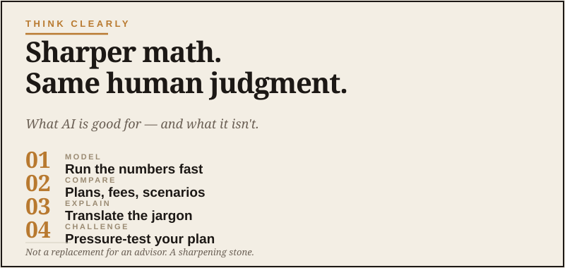

Think Clearly About Money
Sharper math. Same human judgment.

Let me put a stake in the ground at the start. AI is not your accountant. It is not your financial advisor. It is not your tax attorney. For consequential financial decisions — anything involving real money or real risk — you need actual humans who are licensed, insured, and accountable. I like being prepared. I do not like pretending a chatbot is a CPA with a keyboard.
That said. AI is genuinely useful as the layer that sits between you and your professionals. It helps you understand what you’re looking at. It helps you ask smarter questions. It helps you pressure-test ideas before you act on them. And for the small, day-to-day money decisions that don’t merit a $300 advisor call, it gives you a thoughtful sounding board that didn’t exist before.
Used well, it makes you a better client to your professionals and a more informed steward of your own money. Used badly, it makes you confidently wrong about things that matter, which is one of the most expensive kinds of wrong. Here’s how to stay on the right side.
Where AI is genuinely useful for money
1. Understanding documents you didn’t want to read carefully
Brokerage statements. Insurance disclosures. 401(k) summaries. Mortgage refinance offers. Credit card disclosures. The mountain of paperwork that comes with having a financial life.
This is one of the most valuable uses of AI for money. The documents are designed to be opaque. AI cuts through the opacity in a way that respects your time.
2. Preparing for advisor and accountant conversations
If you’ve ever walked out of a meeting with your CPA or financial advisor wishing you’d asked better questions, you know the problem. Those conversations are expensive, often short, and you’re usually only half-prepared because you didn’t even know what to ask. I hate that feeling — nodding along, then realizing in the parking lot that the useful question showed up ten minutes too late.
You’ll come into the meeting prepared. The professional will appreciate it. The conversation will be twice as productive.
3. Comparing financial products without the marketing fog
Two life insurance options. Two mortgage offers. Two 401(k) provider plans. AI can do the boring math and surface the differences that actually matter.
4. Pressure-testing your own thinking
You’ve been considering paying off the house early. Or moving more money into a Roth. Or starting a small business. Or restructuring how you carry credit. AI is a good thinking partner for these calls — not because it knows the answer, but because it asks the questions you forget to ask yourself.
5. Catching up on financial concepts
If there’s something about money you’ve nodded along about for years without fully understanding — Roth conversions, asset allocation, tax-loss harvesting, irrevocable trusts, whatever — AI is an excellent patient teacher.
Where AI will get you in trouble
1. Specific tax advice for your specific situation
Tax law is complex, situational, and changes regularly. AI can give you general explanations of how something works. It cannot — and should not — give you specific advice about your specific tax situation. Use AI to get oriented. Use a CPA to make decisions.
2. Investment recommendations
An AI tool will tell you what you want to hear if you’re not careful, and it doesn’t know your full financial picture. For investment decisions of any size, talk to a fiduciary advisor who is legally obligated to act in your interest.
3. Anything legal
Estate planning. Trusts. Business formation. Real estate transactions. Use AI to understand the concepts and prepare questions. Never use it as a substitute for an actual attorney for anything that creates a legal obligation.
4. Confidently wrong specifics
AI can be confidently incorrect about specific dollar amounts, current tax brackets, recent rule changes, and similar fact-based details. Anything where the specific number matters, verify with the IRS, the SEC, your professional, or a current source.
The privacy reminder
Don’t paste into AI: full account numbers, Social Security numbers, real signatures, full statements with all your personal data, anything that ties to your specific identity in detail.
Do paste, with care: sanitized versions, generic situations, public documents, and your own questions phrased in general terms.
The “describe the situation generally” move is your friend here. “I have a brokerage account with about X in stocks, Y in bonds, and I’m considering Z” gets you the same useful guidance without handing your detailed finances to a tech company.
The mindset shift
The way to think about AI for money is the same way you’d think about a smart friend who knows a little about everything. They’re useful for getting your bearings, useful for thinking out loud, useful for catching things you missed. They’re not your CPA. They’re not your attorney. They’re not your financial advisor.
If you remember that — really internalize it — AI becomes a quietly powerful tool for being a better-informed adult about your own money. The professionals you work with will notice. Your decisions will get sharper. And the small everyday money calls that don’t merit a professional consultation will get a level of thought they never used to get.
That’s a meaningful upgrade. Just don’t mistake the tool for the expert.